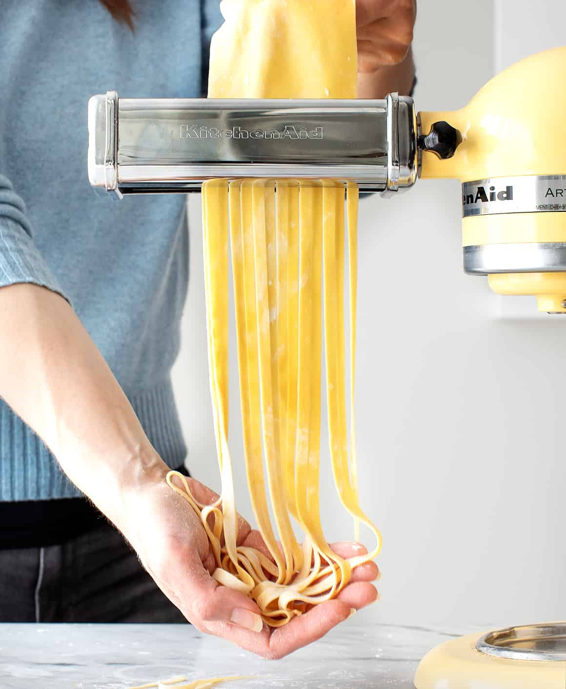

Pasta recipe

Description
Pasta is a type of food typically made from an unleavened dough of wheat flour mixed with water or eggs, and formed into sheets or other shapes, then cooked by boiling or baking.
Ingredients
- All-purpose flour
- Eggs
- Olive oil
- Salt
Steps
- First, make a nest with the flour on a clean work surface. Add the remaining ingredients to the center and use a fork to gently break up the eggs. Try to keep the flour walls intact as best as you can!
- Next, use your hands to gently mix in the flour. Continue working the dough to bring it together into a shaggy ball.
- Then, knead! At the beginning, the dough should feel pretty dry, but stick with it! It might not feel like it's going to come together, but after 8-10 minutes of kneading, it should become cohesive and smooth.
- If the dough still seems too dry, sprinkle your fingers with water and continue kneading to incorporate it into the dough. If the dough becomes too sticky, dust more flour onto your work surface.
- When the dough comes together, shape it into a ball and wrap it in plastic wrap. Let the dough rest at room temperature for 30 minutes.
- After the dough rests, slice it into 4 pieces.
- Use a rolling pin or your hands to gently flatten one into an oval disk.
- Then, run it through the widest setting of your pasta maker (level 1 on the KitchenAid attachment). I run the dough through the pasta maker 3 times on this setting before proceeding to the next step. If you don't have the KitchenAid attachment, roll out the dough according to your pasta maker's instructions.
- Next, fold the dough… if you want to. This step is somewhat optional, but it will make your final pasta sheet more rectangular, which will yield more long strands of pasta. Plus, it's super simple! Just lay the dough flat and fold both short ends in to meet in the center.
- Then, fold it in half lengthwise to form a rectangle.
- Once you've folded the dough, roll it out to your desired thickness. On my KitchenAid attachment, I run it through the pasta roller three times on level 2, three times on level 3, and one time each on levels 4, 5, and 6.
- Repeat these steps with the remaining dough pieces. time you finish with a piece of dough, lay one half of it on a lightly floured baking sheet. Sprinkle the dough with flour, and fold the other half on top. Sprinkle the top with flour, too!
- Finally, cut and cook the pasta. Run the pasta sheets through your desired pasta cutter attachment. Cook the noodles in a pot of boiling salted water for 1 minute, and enjoy!
Navigation
- Home